Uso de IA para Pesquisa Científica
Sumário
- 1. Introdução (Prof. Terlys)
- 2. Engenharia de Prompt (Prof. Terlys)
- 3. IA Para Escrita Científica
- 4. IA para Pesquisas Bibliograficas
- 4.1. Ferramenta Scopus da Elsevier
- 4.2. Ferramenta sicencedirect-LeapSpace da Elsevier
- 4.3. Ferramenta Elicit
- 4.4. Ferramenta Consensus
- 4.5. Ferramenta ScienceOs
- 4.6. Ferramenta SemanticScholar
- 4.7. Ferramenta Inciteful
- 4.8. Ferramenta Openalex
- 4.9. Ferramenta Open Knowledge Maps (OK Maps)
- 4.10. Ferramenta Google Escolar Labs
- 4.11. Ferramenta opencitations
- 4.12. Ferramenta crossref
- 4.13. Ferramenta altmetric
- 4.14. Ferramenta lens
- 4.15. Ferramenta scimagojr
- 4.16. Ferramenta doaj
- 4.17. Ferramenta dimensions
- 4.18. Ferramenta clarivate
- 4.19. Ferramenta notebooklm
- 5. Resumo das Ferramentas de IA para pesquisa científica
- 6. Proximos Passos
1. Introdução (Prof. Terlys)
- Contextualização e Conceitos com base na palestra do Prof. Denis
Posicionamento Teórico e necessidade de orientação
A IA retorna conteúdos sem nenhum critério, ela não tem um posicionamento teórico e ela erra também.
Por esse motivo é fundamental consutar o orientador para questões epistemológicas durante a construção da revisão bibliográfica.
IA Não faz Rev Bibliográfica (É só uma ferramenta)
O Planejamento da Revisão Bibliográfica deve ser feito antes do uso da IA e é de responsabilidade do pesquisador.
- Declaração de Uso da IA (Links)
2. Engenharia de Prompt (Prof. Terlys)
3. IA Para Escrita Científica
3.1. agente Academic Assistent Prof (Terlys)
4. IA para Pesquisas Bibliograficas
Antes das IAs, as pesquisas bibliográficas retornavam resultados apenas com base em palavras chaves. Com o uso de IA, a pesquisa, antes de retornar os resultados, lê o conteúdo antes e provê diferente formas de organização do retorno com base no conteúdo.
4.1. Ferramenta Scopus da Elsevier
A scopus é a ferramenta de busca da Elsevier
Resumo
Ative o "AI Query Builder" e escreva sua pesquisa com linguagem natural e a ferramenta cria a sintaxe de pesquisa com os respectivos "AND" e "OR" pra vc.
Precisa do email da universidade e estar conectado com eduroam
Link de acesso:
Demonstração de pesquisa
{kind=link}
Mais informações sobre a ferramenta
4.2. Ferramenta sicencedirect-LeapSpace da Elsevier
Resumo
O LeapSpace é um chat de IA, mas as respostas provêm de artigos com as devidas citações
Requer login com email da universidade e conexao com a eduroam
Link de Acesso
- Demostração (Tem agente? Ver c/ prof. Terlys)
- Mais informações
4.3. Ferramenta Elicit
Resumo
Apesar de ser uma ferramenta paga, o trial de 7 dias pode ser muitíssimo útil durante a elaboração de uma pesquisa bibliográfica.
Link de Acesso
Demostração
(Tem agente? Ver c/ prof. Terlys)
Ferramenta paga, dá pra usar gratuitamente por 7 dias no trial
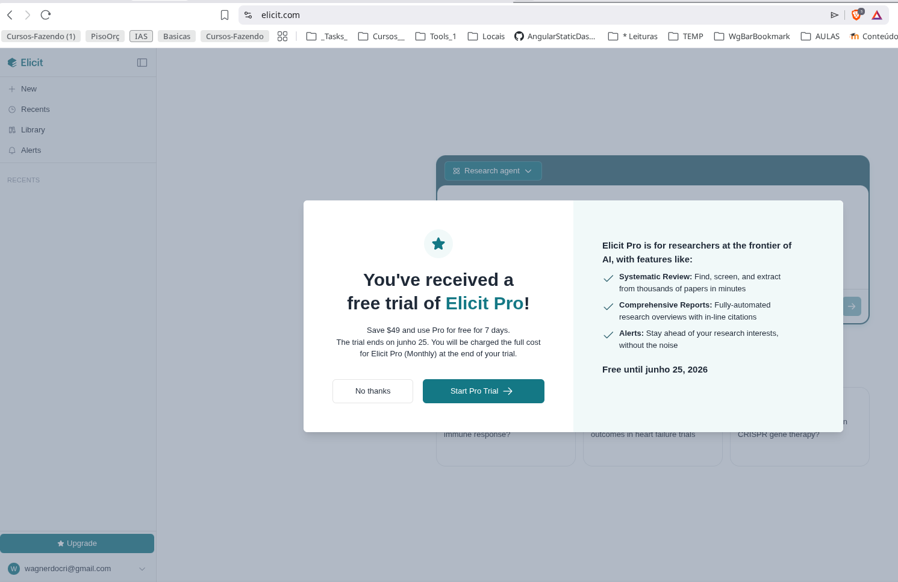
Veja um exemplo de resultado retornado para "Which theoretical points about inclusive education are most contested?" ou seja, "quais os pontos teóricos sobre educação inclusiva são mais contestados?"
Veja aqui o resultado de uma pesquisa
Mais informações
4.4. Ferramenta Consensus
Resumo
Resultados com recursos gráficos muito interessantes
O recurso gráfico mais famoso é a barra da métrica de consenso
Link de Acesso
Demostração
Agente no chatgpt (Prof. Terlys)
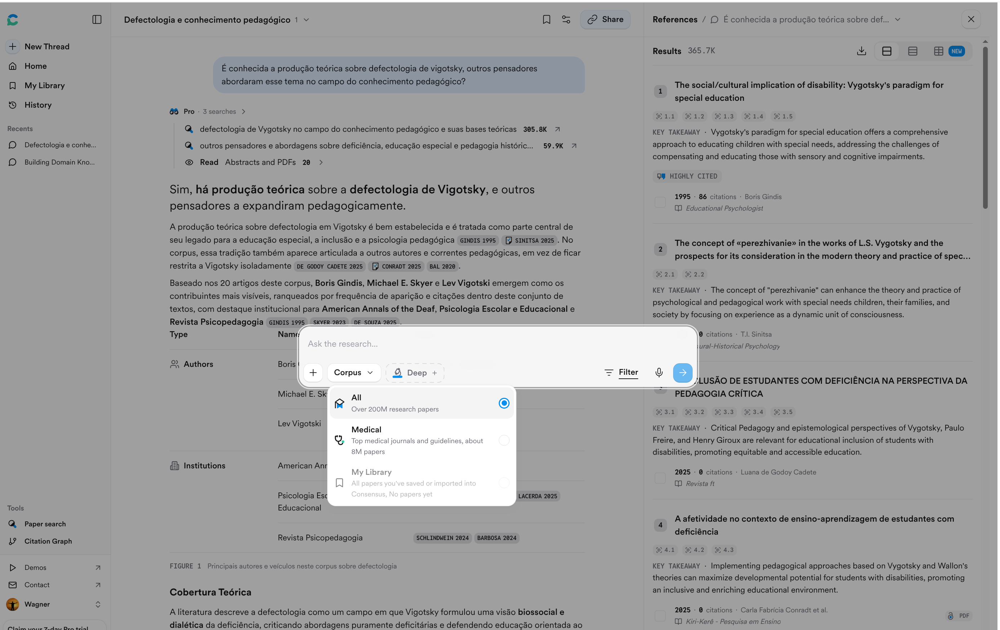
Consulte aqui e aqui resultados obtidos da consesus
Este resultado aqui traz o a métrica de consensu
Mais informações
4.5. Ferramenta ScienceOs
Resumo
Em princípio, mais um chat cujas respostas são provenientes de conteúdos de artigos científicos com as devidas citações.
Viabiliza criação de diagramas com boa qualidade
Conseguimos acessar publicamente
Link de Acesso
Demostração
(Tem agente? Ver c/ prof. Terlys)
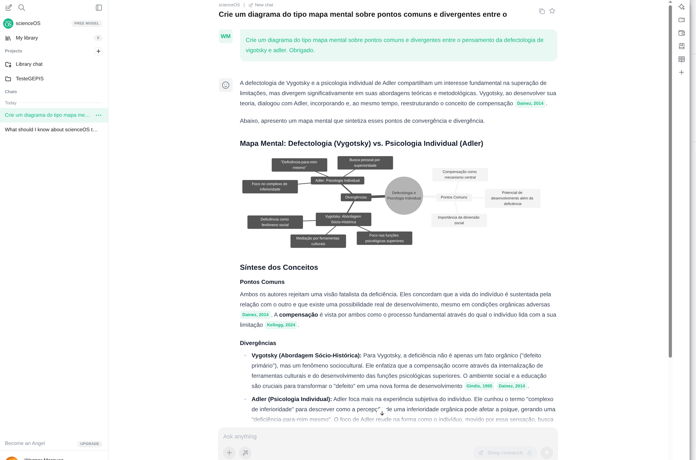
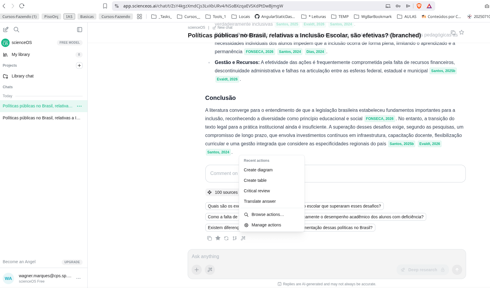
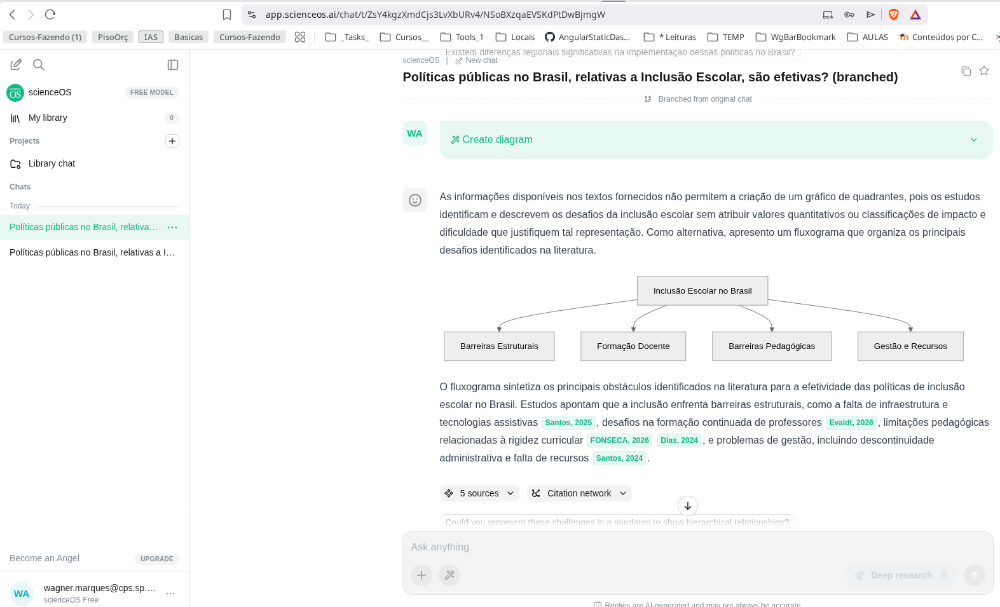
Mais informações
4.6. Ferramenta SemanticScholar
- Resumo
Link de Acesso
Demostração
(Tem agente? Ver c/ prof. Terlys)
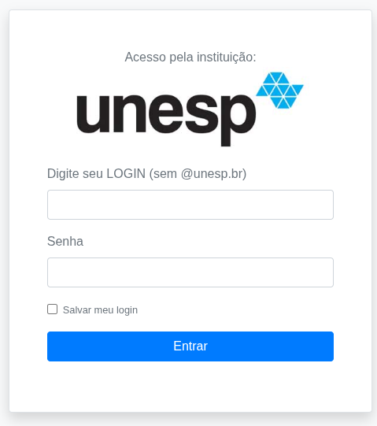
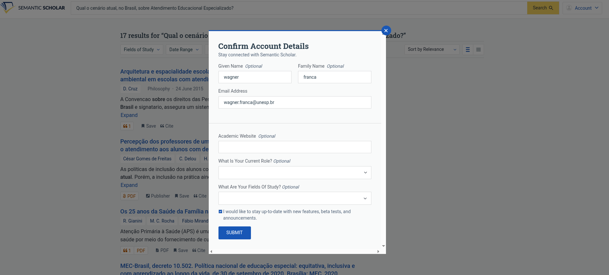
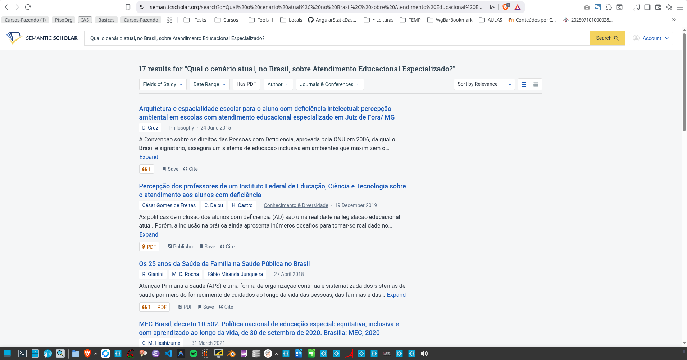
Exemplo de resultados de pesquisa:
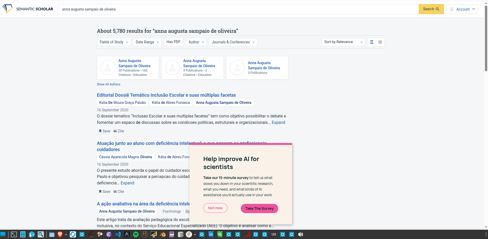
Mais informações
4.7. Ferramenta Inciteful
Resumo
Muito interessante pra pesquisar quem citou quem a partir de um artigo específico. Artigos seminais são candidatos naturais para uso nesta ferramenta de pesquisa.
Por focar nas relações entre as referencias bibliográficas exporta para o zotero. Assim que possível pesquisaremos se exporta para o mendeley.
Link de Acesso
Demostração
(Tem agente? Ver c/ prof. Terlys)
Estas três imagens abaixo ilustra o resultado da pesquisa sobre um artigo da professora Anna Augusta sem precisar ir no site da Iciteful. Mas vale a visita ao site. Digite o nome da professora ou um outro nome para visualizar os resultados.
O interessante do inciteful é que não solicitou cartao e traz à tona todo o contexto dos artigos mais relacionados ao tema de um artigo específico.
Para artigos muito populares, seminais, ou basilar para uma tema de pesquisa, utilizar esta ferramenta para visualizar o entorno teórico relativo ao artigo.
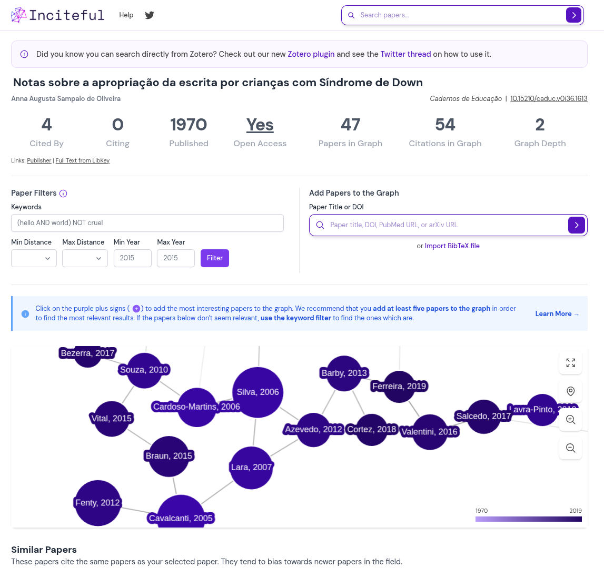
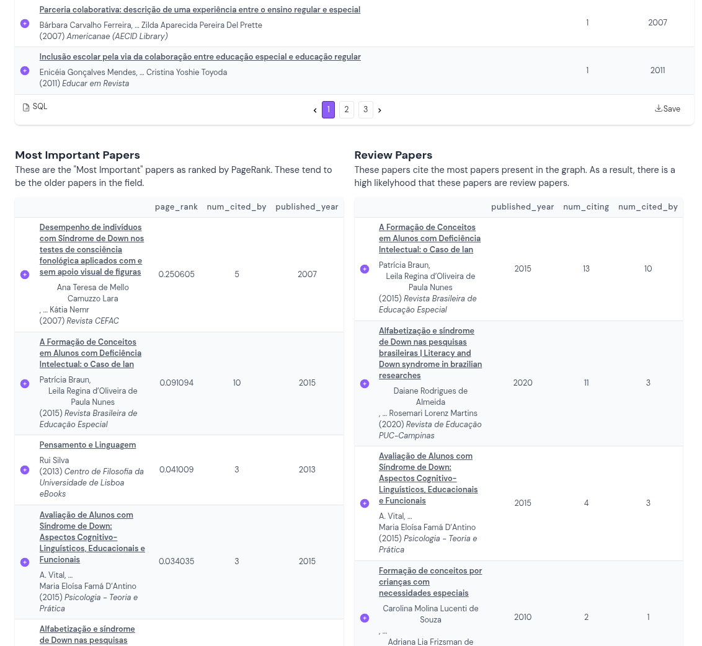
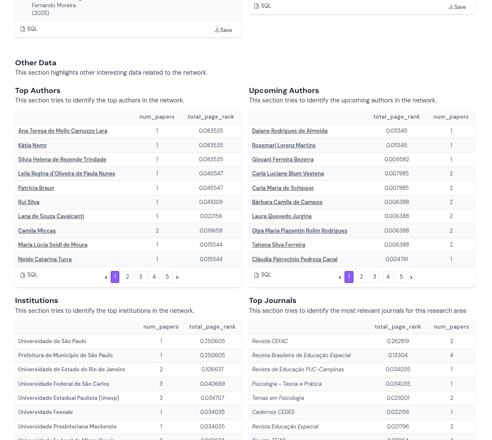
Mais informações
4.8. Ferramenta Openalex
Resumo
Segundo a documentação do openalex o objetivo da ferramenta é ser grande fácil e aberto. Grande porque pode substituir bases comerciais como Elsevier Scopus, Clarivates. Facil de usar, para programadores e usuários, e prover os conjuntos de dados bibliográficos totalmente livre.
De acordo com princípios de dados abertos e ciencia aberta. O que é livre são os metadados das pesquisas. Ferramentas de análises de dados podem obter resultados programaticamente para análises bibliométricas
Link de Acesso
Demonstração
(Tem agente? Ver c/ prof. Terlys)
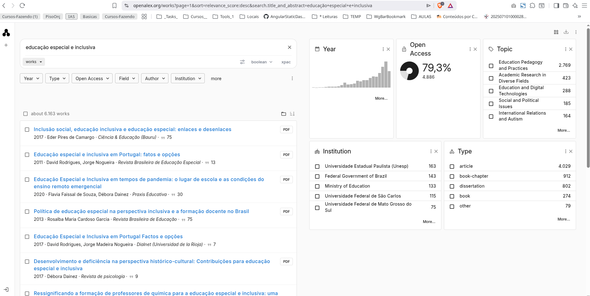
- Mais informações
Alguns vídeos do youtube
4.9. Ferramenta Open Knowledge Maps (OK Maps)
Open Knowledge Maps nos ajuda a escapar da armadilha da "lista infinita" dos mecanismos de busca tradicionais pois agrupa artigos por similaridade de texto (títulos, resumos e metadados). Veja um exemplo aqui
4.9.1. Fluxo de Trabalho para Revisões de Literatura
4.9.2. Estratégias de Compreensão do Mapa de Conhecimento
Uma vez gerado o mapa, existem formas estratégicas de analisá-lo para extrair o máximo de valor:
4.9.3. Como funciona o Painel Interativo do Mapa de Conhecimento
Ao clicar em uma bolha, o mapa aumenta o zoom e a barra lateral direita muda dinamicamente para exibir os documentos correspondentes.
Veja como otimizar sua triagem dentro do painel interativo.
Dica Pro: Como o OK Maps renderiza seu mapa visual dinamicamente com base em um identificador exclusivo vinculado à sua string de busca, você pode copiar a URL direto da barra de endereços do seu navegador para salvá-la neste caderno Org-mode, compartilhá-la com uma equipe de pesquisa ou incorporá-la em um espaço de documentação de projeto.
4.10. Ferramenta Google Escolar Labs
Resumo
O Google Escolar agora tem o labs. Embora seja uma ferramenta, segundo a Google, experimental, está funcionando muito bem.
Sendo assim é possível então usar linguagem natural para pesquisar no google escolar.
Link de Acesso
Demonstração
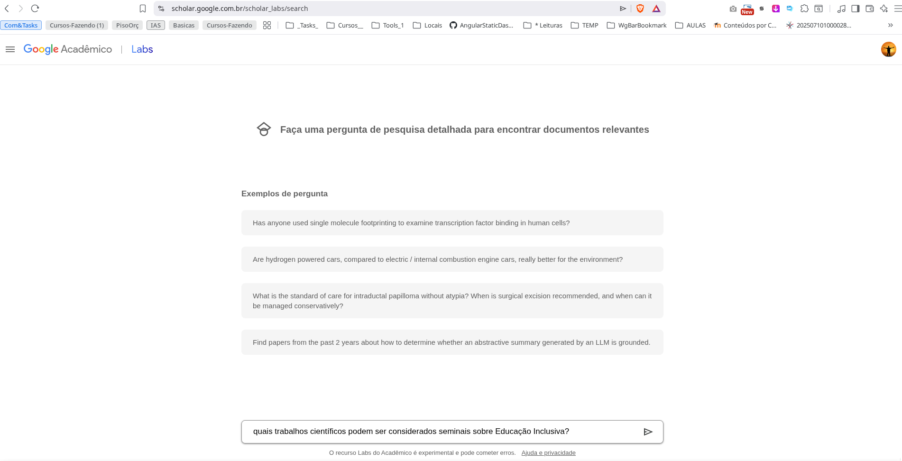
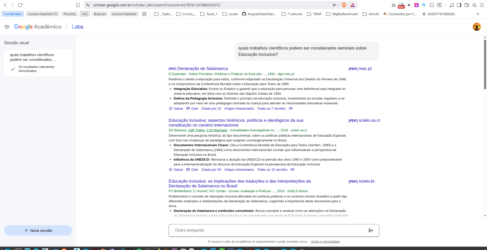
Mais informações
https://blog.google/products-and-platforms/products/education/google-scholar-labs/
4.11. Ferramenta opencitations
- Resumo
Link de Acesso
- Demonstração
- Mais informações
4.12. Ferramenta crossref
- Resumo
Link de Acesso
- Demonstração
- Mais informações
4.13. Ferramenta altmetric
Resumo
Ferramenta que traz muitas informações bibliométricas. Nos pareceu ser a única que preocupa-se em análise da influência ou impacto dos estudos científicos.
Traz informações até sobre citações nas mídias sociais
Link de Acesso
Demonstração
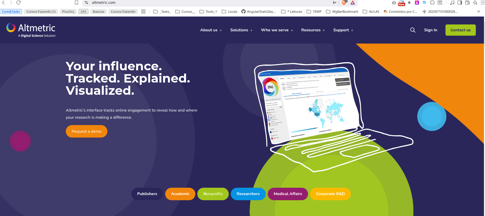
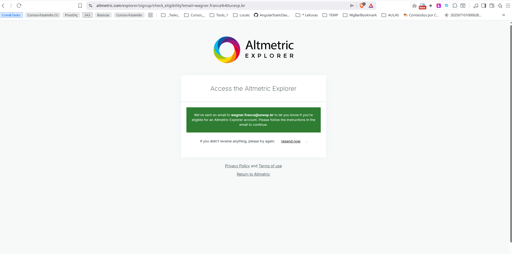
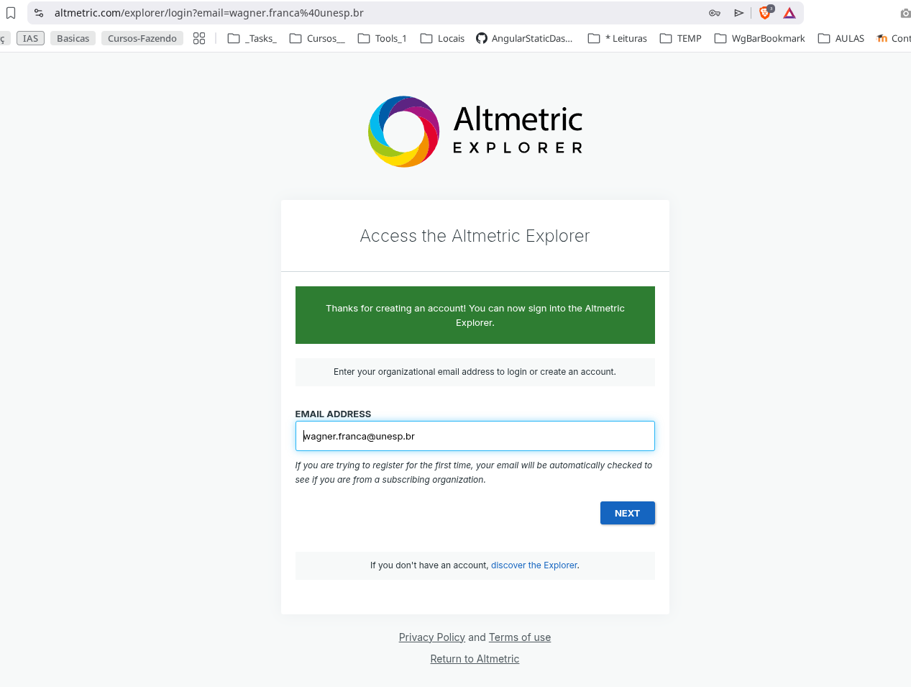
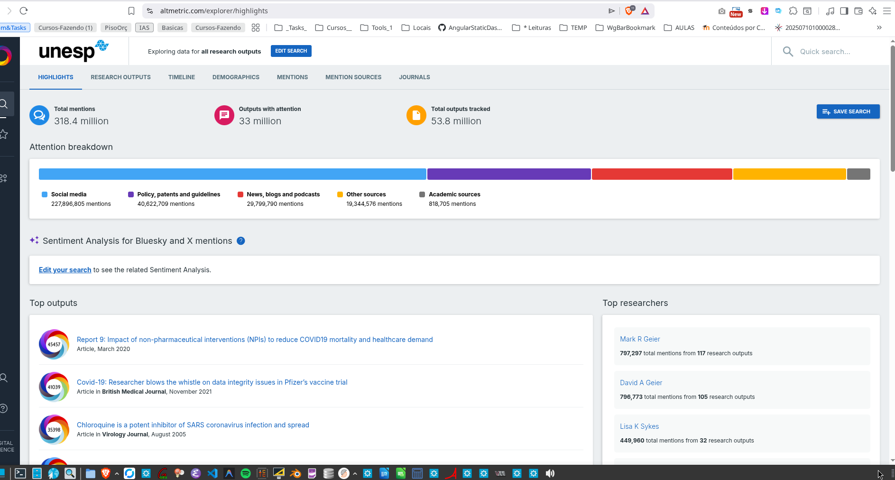
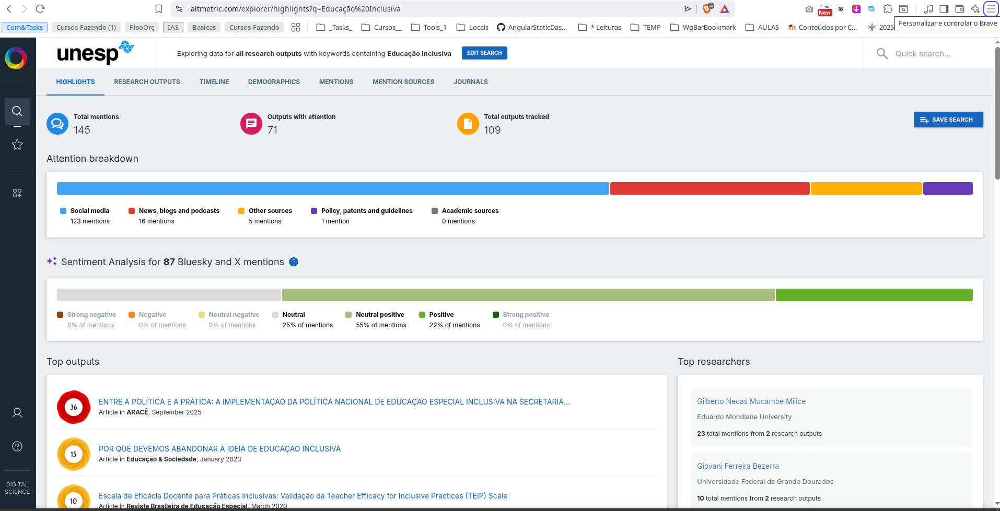
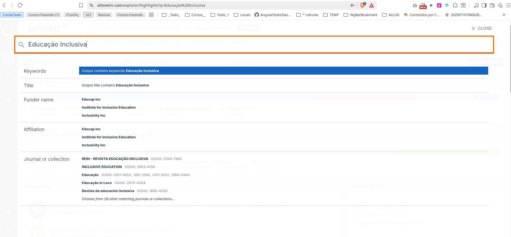
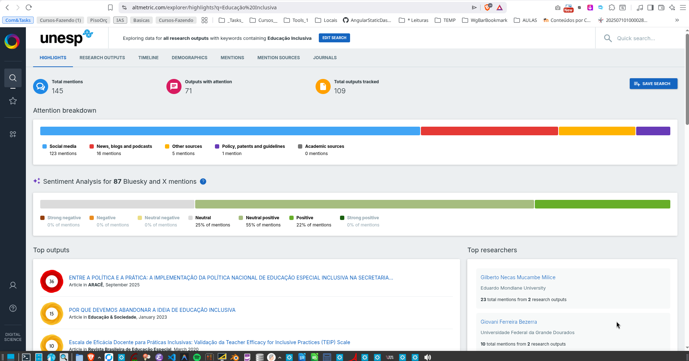
4.14. Ferramenta lens
- Resumo
Link de Acesso
- Demonstração
- Mais informações
4.15. Ferramenta scimagojr
- Resumo
Link de Acesso
- Demonstração
- Mais informações
4.16. Ferramenta doaj
- Resumo
- Link de Acesso https://doaj.org/
- Demonstração
- Mais informações
4.17. Ferramenta dimensions
- Resumo
Link de Acesso
- Demonstração
- Mais informações
4.18. Ferramenta clarivate
- Resumo
Link de Acesso
- Demonstração
- Mais informações
4.19. Ferramenta notebooklm
- Resumo
Link de Acesso
- Demonstração
- Mais informações
5. Resumo das Ferramentas de IA para pesquisa científica
| Ferramenta | Melhor Para | Vantagem Principal |
|---|---|---|
| Scopus | Elsevier é bastante tradicional | |
| Elicit | Extração de dados estruturados | Permite carregar milhares de PDFs ou consultar sua base para criar tabelas comparativas automatizadas (ex: extraindo amostras ou doses). |
| Consensus | Verificação baseada em evidências | Motor de busca em 250M+ artigos. Inclui o "Consensus Meter" que analisa se a literatura tende ao "sim", "não" ou "misto" para uma afirmação. |
| PapersFlow | Ciclo de vida completo da pesquisa | Escolha popular para combinar descoberta de artigos via multi-agentes com escrita assistida por IA e formatação de citações integrada. |
| scienceOS | Chat interativo com múltiplos PDFs | Permite carregar até 4.000 PDFs em um workspace seguro para interagir com figuras, tabelas e textos, baseando-se exclusivamente nos seus documentos. |
6. Proximos Passos
Este texto é só a organização inicial das ferramentas de IA capazes de colaborar com a produção científica, sendo assim é uma lista não exaustiva e que carece ainda de mais esforços no sentido de fornecer informações sobre as perguntas abaixo:
- Existem mais ferramentas de IA para pesquisa, como classificá-las?
- Quais ferramentas de pesquisa pesquisam em quais bases?
- Quais as bases mais tradicionais por área do conhecimento?